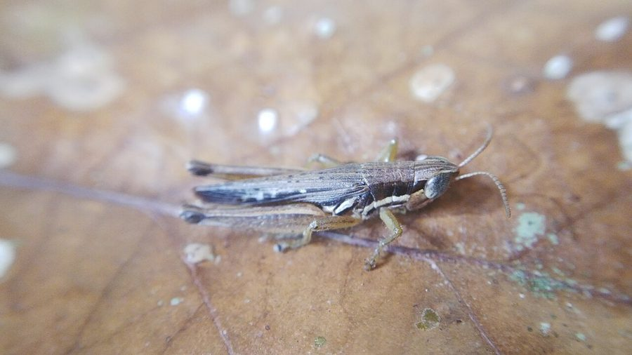

स्पेथोस्टर्नम ग्रासहॉपरSpathosternum Grasshopper
Spathosternum prasiniferum · Acrididae · INS-0277

- Scientific name वैज्ञानिक नाम
- Spathosternum prasiniferum (Walker, 1871)
- Family कुल
- Acrididae
- Hindi हिंदी
- स्पेथोस्टर्नम ग्रासहॉपर
- Local names स्थानीय नाम
- spathosternum grasshopper
- Status here यहाँ की स्थिति
- native
- Movement आवागमन
- Resident, here all year
- Known from कहाँ दर्ज
- Others have published records from the wider Awadh–Purvanchal plain, none yet from Basti–Ayodhya अवध–पूर्वांचल से दूसरों के प्रकाशित अभिलेख, बस्ती–अयोध्या से अभी नहीं
- IUCN IUCN
- not evaluated
- Review समीक्षा
- not yet reviewed
When to look कब देखें
Present all year. साल भर मौजूद।
Uses and possibilities उपयोग और संभावनाएँ
“Traditional medicine” means a documented traditional use, not a claim that it works. Nothing on this page is medical advice.
Drawn from the documented uses in the profile below, where each is labelled traditional, current or a research lead. All uses →
Tell it apart from इनसे अलग पहचानें
स्पेथोस्टर्नम ग्रासहॉपर / Spathosternum Grasshopper
Spathosternum prasiniferum (Walker, 1871) — Acrididae
स्पेथोस्टर्नम ग्रासहॉपर — पूर्वी उत्तर प्रदेश के खेतों की मेड़ों, चरागाहों और धान के किनारों पर सबसे ज्यादा पाया जाने वाला एक छोटा, फुर्तीला और हरा-भूरा टिड्डा है। इसके सीने के दोनों तरफ आंखों से लेकर पंखों तक एक गहरी काली या कत्थई धारी होती है और इसके पंख शरीर से थोड़े लंबे होते हैं। यह घासों और धान की पत्तियों के किनारों को कुतरकर खाता है और खेतों में रहने वाले बगुलों, पतरिंगों और मेंढकों का मुख्य भोजन है।
Quick Identification त्वरित पहचान
| Feature | Description |
|---|---|
| Body size & color | Small, slender grasshopper, predominantly bright grass-green or yellowish-green, occasionally brownish |
| Lateral stripe | Conspicuous dark brown to blackish longitudinal band running from behind each eye across the pronotum |
| Tegmina | Slender, semi-transparent tegmina extending slightly beyond the apex of the hind femora |
| Hind legs | Pale green jumping legs with a pale yellowish-green tibia armed with fine spines |
| Habitat niche | Found in low grassy vegetation, jumping actively when walked through rather than taking long flights |
Small, slender green or brownish short-horned grasshopper recognised by the distinct dark lateral stripe extending from behind the eyes across the sides of the pronotum to the wing base.
Field tip: Walk through a grassy paddy field bund; dozens of small green grasshoppers with dark side stripes will leap energetically into the vegetation.
हिंदी: छोटा, छरहरा हरा टिड्डा जिसकी आंखों के पीछे से सीने तक एक काली-भूरी पट्टी होती है। घास में चलने पर यह बहुत तेजी से कूद-कूद कर आगे भागता है।
Morphology आकारिकी
Biometrics from open entomological literature:
| Feature | Characteristic | Source |
|---|---|---|
| Body shape | Slender, cylindrical, moderately compressed laterally, streamlined for jumping | Literature |
| Color phases | Bright grass-green morph and cryptic yellowish-brown or greyish-brown morph | Literature |
| Pronotal bands | Broad, well-defined dark fuscous or blackish lateral stripes on the upper pronotal lobes | Literature |
| Antennae | Short, filiform antennae shorter than head and pronotum combined | Literature |
| Typical dimension | Measurement not available in consulted open sources. | Open sources |
The adult grasshopper is small and slender. The head is conical with an oblique face and fastigium of vertex obtusely rounded. The filiform antennae are relatively short, not reaching beyond the posterior margin of the pronotum. Coloration is polymorphic: individuals are predominantly bright grass-green, but dry-season individuals frequently display yellowish-brown or greyish-ochraceous phases. The most reliable identification character is the broad, dark brown or blackish longitudinal stripe that begins behind each compound eye, passes across the upper lateral lobe of the pronotum, and continues along the costal area of the tegmina. The prosternal tubercle is spathulate (flattened and widened at apex). Hind tibiae are pale green or yellowish.
हिंदी: इसका शरीर पतला और बेलनाकार होता है। यह अधिकतर चमकीले हरे रंग का होता है लेकिन सूखे में हल्का भूरा भी हो जाता है। आंखों के पीछे से शुरू होकर पंखों तक जाने वाली काली-भूरी पट्टी इसकी मुख्य पहचान है। इसके सीने के नीचे एक चम्मच जैसा छोटा उभार होता है।
Behaviour & Ecology व्यवहार और पारिस्थितिकी
A diurnal, sun-loving acridid that inhabits the herbaceous and graminoid layer of open landscapes. It spends the day actively basking and grazing on tender grass blades, perching vertically along stems. When startled by a walking human or predator, it executes short, erratic leaps covering a few feet before diving into dense grassy cover. It relies on its green camouflage to blend with grass stems. During warm sunny hours, males produce soft, faint stridulatory songs by rubbing pegs on the inner surface of the hind femora against the hardened radial vein of the tegmina to attract females.
हिंदी: यह धूप सेकने वाला दिन का कीड़ा है जो घास के तिनकों पर सीधा बैठता है। कोई पास आता है तो यह छलांग लगाकर घास में छिप जाता है। नर अपनी पिछली टांगों को पंखों से रगड़कर हल्की आवाज निकालता है जिससे मादा उसकी तरफ आकर्षित होती है।
Life Cycle / Phenology जीवन चक्र
Breeds actively during the monsoon and post-monsoon seasons across the Gangetic plain, with adults persisting through mild winter months. Following mating, females use their hardened valved ovipositor to insert egg pods into loose, moist soil along field bunds and ditch banks. Each pod contains multiple elongated eggs cemented together in a protective frothy matrix. Eggs hatch following rainfall, and nymphs undergo five moults over roughly one month, feeding alongside adults on tender grass shoots. Two to three generations are completed annually.
हिंदी: बरसात के समय मादा खेत की मेड़ की गीली मिट्टी में छेद करके अंडों का गुच्छा देती है। एक महीने में बच्चे पांच बार केंचुल बदलकर बड़े हो जाते हैं। एक साल में इसकी दो से तीन पीढ़ियां तैयार हो जाती हैं।
Host Plants or Prey आहार
A generalist herbivore specializing in graminoid vegetation (family Poaceae). Favoured wild plants in eastern Uttar Pradesh include sawan grass (Echinochloa colona), Bermuda grass (Cynodon dactylon), goose grass (Eleusine indica), and various wetland sedges. In agricultural areas, it readily feeds on tender leaves of Paddy (Oryza sativa), wheat seedlings, and fodder crops such as sorghum and oats.
हिंदी: यह मुख्य रूप से घास खाने वाला कीड़ा है। दूब, सावां और मेड़ों पर उगने वाली अन्य घासों के अलावा यह धान की नई पत्तियों को किनारों से कुतरकर खाता है।
Predators / Natural Enemies शत्रु
Forms a foundational component of the lowland farmland food web, sustaining diverse predator guilds. Insectivorous farmland birds hunt them relentlessly in pastures and grassy borders. Amphibians gorge on jumping nymphs along ditch edges, while predatory praying mantises and large hunting spiders capture both nymphs and adults within dense grassy cover.
हिंदी: खेत के शिकारी पक्षी और मेंढक इसे बहुत चाव से खाते हैं। मेंटिस (प्रार्थना कीट) और बड़ी शिकारी मकड़ियां घास में छिपकर इसका शिकार करती हैं। यह खेत के पक्षियों का मुख्य आहार है।
Agricultural / Human Relevance कृषि प्रासंगिकता
Generally considered a minor to moderate agricultural pest of rice and cereal crops in northern India. While rarely causing catastrophic defoliation like swarming locusts, high populations on field bunds can invade standing paddy fields during early vegetative stages, chewing ragged notches along leaf margins. Because it serves as a critical food source for farmland insectivorous birds, aggressive chemical spraying of grassy field bunds is counterproductive. Recommended management focuses on routine weeding of field bunds, grazing livestock on fallow verges, and erecting T-shaped wooden bird perches in crop fields to invite avian predators.
हिंदी: यह धान की पत्तियों को थोड़ा-बहुत कुतरता है लेकिन बहुत बड़ा नुकसान नहीं करता। यह खेत के मददगार पक्षियों का मुख्य भोजन है, इसलिए मेड़ों पर जहरीली दवाओं का छिड़काव नहीं करना चाहिए। खेत में चिड़ियों के बैठने के लिए खूंटियां गाड़ना इसके नियंत्रण का सबसे अच्छा उपाय है।
Expected Locally स्थानीय रूप से अपेक्षित
Not a field record. Written from published accounts for eastern Uttar Pradesh. No confirmed local sighting yet — if you have seen it, that is what the atlas needs.
अभी तक स्थानीय पुष्टि नहीं। यह विवरण प्रकाशित स्रोतों से है, किसी अवलोकन से नहीं।
Abundant across grassy field borders, pastures, irrigation ditch banks, and paddy fields throughout eastern Uttar Pradesh. Observers in Basti and Ayodhya should walk along grassy bunds of rice fields between August and November.
GBIF holds published records from the wider Awadh–Purvanchal plain, none yet from Basti–Ayodhya.
A first local record for the atlas would be a clear photograph showing diagnostic features, accompanied by date, time, and precise location coordinates sent through the project's About page.
हिंदी: यह बस्ती और अयोध्या के सभी खेतों की मेड़ों और चरागाहों की घास में बहुत आसानी से मिल जाता है। घास में फुदकते इस हरे टिड्डे की साफ फोटो खींचकर एटलस को भेजें।
Distribution वितरण
Global range: Widespread across South and Southeast Asia, native to India, Pakistan, Nepal, Bangladesh, Myanmar, Thailand, and southern China.
In India: One of the most abundant grasshopper species, distributed across all states from the plains to the sub-Himalayan foothills.
In Uttar Pradesh: Universal across all agricultural and grassland habitats in the Gangetic plain.
In Basti district / eastern UP: Expected throughout all rural blocks in eastern Uttar Pradesh based on regional orthopteran survey publications.
हिंदी: यह भारत, पाकिस्तान, नेपाल, बांग्लादेश और म्यांमार में पाया जाता है। उत्तर प्रदेश के सभी मैदानी और तराई इलाकों में यह सबसे आम टिड्डा है।
Research Questions शोध प्रश्न
- What is the impact of mechanical bund mowing versus grazing on the population density of Spathosternum prasiniferum along paddy margins?
- What is the predation rate of insectivorous farmland birds on grasshopper nymphs during the monsoon rice tillering stage? / क्या खेतों में आने वाली शिकारी चिड़ियां इस टिड्डे का तेजी से शिकार करती हैं?
- How do green versus brown colour morph frequencies shift across seasonal post-monsoon drying cycles in eastern UP?
- A schoolchild can catch a small grasshopper in the grass to examine if it has a dark line running behind its eye / क्या कोई बच्चा घास में से टिड्डा पकड़कर उसकी आंख के पीछे वाली काली पट्टी देख सकता है?
- How does the presence of bird perches in paddy fields correlate with reduced grasshopper leaf damage along crop edges?
हिंदी: क्या खेत में टी (T) आकार की खूंटियां लगाने से चिड़ियां इस टिड्डे को खाकर फसल की रक्षा करती हैं? क्या बच्चे इसकी काली पट्टी को पहचान सकते हैं?
Similar Species मिलती-जुलती प्रजातियाँ
| Species | How to tell apart | हिंदी | |
|---|---|---|---|
| Paddy Grasshopper \ | Oxya fuscovittata | Larger, robust green grasshopper with dark lateral band, but lacking spathulate prosternal tubercle | धान का बड़ा टिड्डा आकार में बड़ा होता है और उसके सीने के नीचे चम्मच जैसा उभार नहीं होता |
| Hieroglyphus banian | Much larger rice grasshopper with distinct black transverse suture lines across pronotum | धान का फड़का आकार में बहुत बड़ा होता है और उसके सीने पर काली अनुप्रस्थ लकीरें होती हैं |
Field rule: Small, slender, green or brownish grasshopper with a conspicuous dark brown lateral stripe running from behind each eye across the pronotum.
हिंदी: छोटा, छरहरा हरा टिड्डा जिसकी आंखों के पीछे से सीने तक एक साफ काली-भूरी धारी बनी हो और जो घास में फुदकता हो।
Taxonomy & Classification वर्गीकरण
Original description. Walker (1871), Catalogue of the Specimens of Dermaptera Saltatoria in the Collection of the British Museum, Part 5, p. 65; described under the basionym Heteracris prasinifera.
Subspecies. Subspecies Spathosternum prasiniferum prasiniferum (Walker, 1871) occurs across northern India and eastern UP.
Family and order placement. Belongs to the short-horned grasshopper family Acrididae (subfamily Hemiacridinae), order Orthoptera, class Insecta.
Phylogenetic notes. Characterized within Hemiacridinae by the uniquely widened, spathulate prosternal tubercle and short conical head morphology.
IUCN status rationale. Not currently evaluated on the IUCN Red List of Threatened Species.
हिंदी: इसका वैज्ञानिक विवरण वॉकर ने 1871 में दिया था। यह एक्रीडिड्डी कुल का सदस्य है और ऑर्थोप्टेरा गण में आता है।
Photo Gallery फोटो गैलरी
No photos yet — add field photos to media/species/spathosternum_grasshopper/ and run node scripts/sync_photos.js.
Photos needed आवश्यक फोटो
- [ ] Adult green morph showing dark lateral stripe from eye across pronotum (हरे टिड्डे का दृश्य जिसमें काली धारी दिखे)
- [ ] Adult brown morph resting on dry grass blade (सूखी घास पर बैठा भूरा टिड्डा)
- [ ] Ragged chewing damage on paddy leaf edge (कुतरी हुई धान की पत्ती)
References संदर्भ
- Original description: Walker, F. (1871). Catalogue of the Specimens of Dermaptera Saltatoria in the Collection of the British Museum. Part 5. British Museum, London, p. 65. (as Heteracris prasinifera).
- Kirby, W. F. (1914). The Fauna of British India, Including Ceylon and Burma: Orthoptera (Acridiidae). Taylor & Francis, London, p. 211.
- Shishodia, M. S., Chandra, K. & Gupta, S. K. (2010). An annotated checklist of Orthoptera (Insecta) from India. Records of the Zoological Survey of India, Occasional Paper, 314: 1–366.
- National Institute of Plant Health Management & Directorate of Plant Protection, Quarantine and Storage. (2014). AESA Based IPM Package for Rice. Department of Agriculture & Cooperation, Ministry of Agriculture, Government of India. URL: https://niphm.gov.in/IPMPackages/Rice.pdf.
- GBIF Occurrence Data — Spathosternum prasiniferum, India (2025).
Source file: species/fauna/insects/spathosternum_grasshopper.md